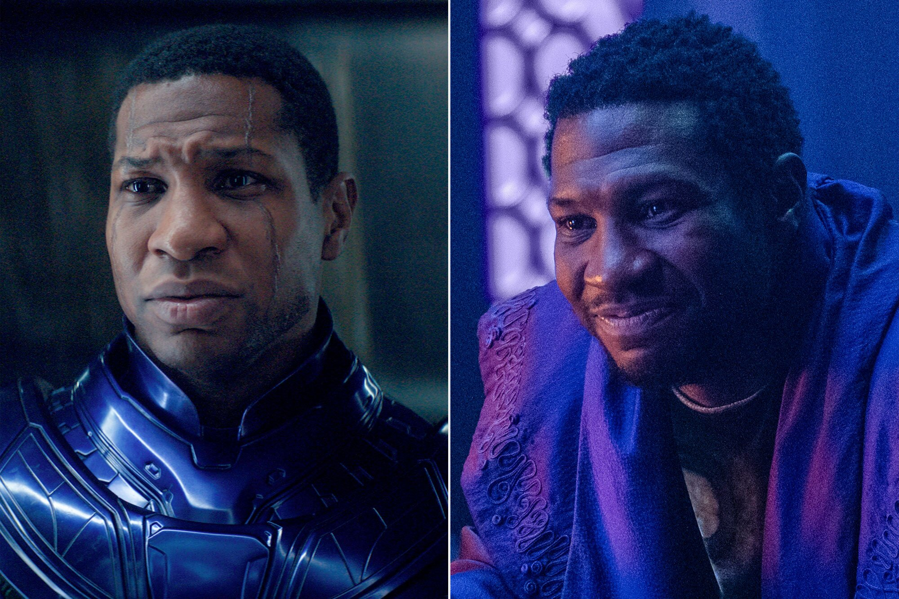

NAMOR
K'uk'ulkan, lepiej znany jako Namor, jest głównym antagonistą filmu Marvel Cinematic Universe Czarna Pantera: Wakanda w moim sercu z 2022 roku.
Jest zmutowanym królem Talokanu, urodzonym w XVI wieku po tym, jak tubylcy Majów z Jukatanu spożyli zioło wzmocnione vibranium, aby przystosować swoje ciała do podwodnego życia.
Był w wiecznym konflikcie z ludźmi na powierzchni, ostatecznie angażując się w wojnę totalną z Wakandą.
W jego rolę wcielił się Tenoch Huerta.
KANG

Nathaniel Richards znalazł sposób na podróżowanie w czasie i z własnej epoki powędrował do starożytnego Egiptu 3000 lat p.n.e. Przez kilka lat panował w nim jako Rama Tut.
Następnie przeniósł się do XL wieku, gdzie jako Kang Zdobywca zbudował własne imperium. Kang zwykle walczy z Avengers, choć kiedyś przyłączył się do nich,
chcąc powstrzymać samego siebie, Immortusa, przed zniszczeniem wielu światów równoległych.
W kanonicznym uniwersum filmowym Marvela pojawił się pierwszy raz w serialu "Loki" a następnie w filmie "Antman and Wasp: Quantumania" W jego rolę wcielił się Jonathan Majors.
ECHO
Przed śmiercią zadana ręką Wilsona Fiska (Kingpinga).Willie(Crazy horse) Lincoln poprosił, aby Fisk zaopiekował się jego niesłyszącą córka, Mayą.
Kingpin wychował dziewczynę jak własne dziecko, utrzymując, że jej ojca zamordował Daredevil. Maya przysięgła więc, że pomści ojca.
Doskonaliła sztuki walki, przybrała imię Echo i usiłowała zabić Daredevila. Kiedy poznała prawdę, strzelała do Kingpina.
Następnie przyłączyła się do New Avengers jako Ronin. W kanonicznym uniwersum filmowym Marvela pojawiła się pierwszy raz w serialu "Hawkeye". W jej rolę wcieliła się Alaqua Cox.
BLADE
Eric Brooks urodził się jako pół wampir, pół człowiek, po tym jak krwiopijca, imieniem Deacon Frost, pożywił się jego matką.
Bohater poświęcił swoje życie polowaniom na wampiry i inne demoniczne istoty. Z uwagi na swoje pochodzenie ma w krwiobiegu wampirze enzymy,
które dają mu odporność na ukąszenia wampirów. Po ataku Morbiusa, Blade zyskał niesamowitą siłę. Razem z grupą Mighty Avengers Luke'a Cage'a
przyjął rolę Ronina i zajął się śledzeniem członków kultu Deathwalkers.
IRON HEART
Po Drugiej Wojnie Domowej Superbohaterów, gdy Stark zapadł w śpiączkę, Riri postanowiła kontynuować swoją działalność, jako superbohaterka.
Z pomocą duplikatu Tony'ego Starka, Riri stworzyła nowy, znacznie lepszy zestaw zbroi i przyjęła pseudonim Ironheart. W MCU Riri Williams pojawiła się pierwszy raz
w filmie "Czarna Pantera: Wakanda w moim sercu" gdzie z pomocą Shuri stworzyła swoją pierwszą wykończoną zbroję. W jej rolę wcieliła się Dominique Thorne.
AGATHA HARKNESS
Chociaż wygląda jak starsza kobieta (a technicznie jest taka), Agatha jest jeszcze starsza, żyjąc od czasów przed zatonięciem Atlantydy dziesiątki tysięcy lat
w przeszłości Marvela. Przedłużając swoje życie za pomocą magicznych środków dzięki jej pierwotnej, często mrocznej magii, Harkness przeżyła niezliczone wcielenia,
nieustannie doskonaląc swoje umiejętności. Pierwszy raz na ekranie przedstawiono tą postać w serialu "Wanda Vision" w której odegrała rolę "ukrytego złoczyńcy", a w jej
rolę wcieliła się Kathryn Hahn.
DAREDEVIL
Matt Murdock jako młody chłopiec został ofiarą wypadku, w którym pewien bliżej nieokreślony (przypuszczalnie radioaktywny) specyfik oślepił go,
jednak wyostrzył wszystkie pozostałe zmysły. Jego ojciec był bokserem i zbieraczem długów dla gangu kierowanego przez Fixera. Pewnego wieczoru Fixer kazał
mu oddać walkę, jednak ten tego nie zrobił i wygrał. Rozgniewało go to ,więc kazał zabić ojca Matta. Matt został sierotą. Włócząc się po dzielnicy
spotkał człowieka imieniem Stick, który wyszkolił go w sztukach walki i pokazał jak przydatne mogą być jego wyostrzone zmysły. Gdy Matt skończył studia prawnicze,
zdecydował się prowadzić podwójne życie: przywdział imię Daredevil (Śmiałek) i kostium budzący strach w przestępcach. Odtąd zwany Człowiekiem Nie Znającym Strachu
walczył z przestępczością w dzielnicy Nowego Jorku, Hell's Kitchen. Przed wejściem do MCU miał swój serial na platwormie Netflix. Jego pierwsze CAMEO w oficjalnym uniwersum
było w filmie "Spiderman: no way home" jako prawnik Petera Parkera, a następnie w serialu "She-hulk" gdzie powoli zaczęto wprowadzać jego postać coraz głębiej. W jego roli
występuje Charlie Cox.